ПРИТУРКИ
1. БЪЛГАРСКО ЛЕТОБРОЕНИЕ
Преди три години, когато обнародвахме нашите нови доказателства за българското
летоброение и за българската ера, [1] нам ни беше известно
само резюмето от доклада на проф. И. Микола, което беше напечатано в „Известията”
на Петроградската академия. [2] След това вече получихме
от него и самото му изследване под наслов: Die Chronologie der t rkischen
Donaubulgaren, [3] в което авторът, като разглежда „Именника”
всестранно, дава съвсем нови обяснения за значението на някои от годините-животни
в 12-годишния цикъл. Така докато в резюмето обясняваше, че сомор
= „мишка” е първата циклова година; шегор = „вол” — втората;
вери
= бри = „вълк”
— третата; дванш = „заек” — четвъртата, дилом
= „змия” — шестата; тох = „кокошка” — десетата; ит
(ет) = етх = „куче” — единадесетата и дохс = „свиня”
— дванадесетата година в 12-годишния цикъл, в изследването си прави
следните изменения в значението на имената: вер = suver или sever
= „мишка”, т. е. означава 1-вата година на цикъла; текучитем, което
той ком-
rkischen
Donaubulgaren, [3] в което авторът, като разглежда „Именника”
всестранно, дава съвсем нови обяснения за значението на някои от годините-животни
в 12-годишния цикъл. Така докато в резюмето обясняваше, че сомор
= „мишка” е първата циклова година; шегор = „вол” — втората;
вери
= бри = „вълк”
— третата; дванш = „заек” — четвъртата, дилом
= „змия” — шестата; тох = „кокошка” — десетата; ит
(ет) = етх = „куче” — единадесетата и дохс = „свиня”
— дванадесетата година в 12-годишния цикъл, в изследването си прави
следните изменения в значението на имената: вер = suver или sever
= „мишка”, т. е. означава 1-вата година на цикъла; текучитем, което
той ком-
1. Вж. нашата статия „Към въпроса за българското летоброение”, Сп БАН, Х (1915), стр. 1—22.
2. Напечатано в Известия отдел. рус. яз. и словесности, т. XVIII (1913), кн. 1, стр. 248—247: Тюркско-болгарское летосчисление.
3. Напечатано в Journal de la Socit Finno-Ougrienne, Helsingfors, XXX,33 (1914), отд. отпеч., стр. 1—25.

449
бинира от Тектем, името на известния княз, и от кучи = ko = „овен” или „овца”, т. е. дава 8-ата година на цикъла, и сомор,
което дели на со — сричка, която прибавя към началото на името Винех, и
мор
= morin = „кон”, т. е означава 7-ата циклова година; другите значения си
остават същите. Втората дума в българските изрази представят поредни бройни
имена и означават названия на месеците в цикловата година. От тях са известни: 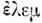,
алем
означава „първи”, вечем — „трети”,
тутом — „четвърти”,
бехти
—„пети”, алтом — „шести”,
шехтем (?) — „осми”,
твирем
— „девети”; какво означава ениалем, ще посочим по-долу.
= „овен” или „овца”, т. е. дава 8-ата година на цикъла, и сомор,
което дели на со — сричка, която прибавя към началото на името Винех, и
мор
= morin = „кон”, т. е означава 7-ата циклова година; другите значения си
остават същите. Втората дума в българските изрази представят поредни бройни
имена и означават названия на месеците в цикловата година. От тях са известни: 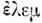,
алем
означава „първи”, вечем — „трети”,
тутом — „четвърти”,
бехти
—„пети”, алтом — „шести”,
шехтем (?) — „осми”,
твирем
— „девети”; какво означава ениалем, ще посочим по-долу.
Тия обаче изменения, които според Микола са били предизвикани или по хронологически съображения, или по погрешка на преписвача, или поради смесване на сричките и на редовете при преписването, наложили на автора при изчислението годините на българските князе такива хипотези, поправки и размествания в текста на Именника, че последният е съвсем изгубил първоначалния си вид. Вече това обстоятелство иде да ни убеди, че Микола не ще да е попаднал на истинския път, както когато обяснява значението на някои имена-животни в 12-годишния цикъл, тъй и когато изчислява годините на князете; при това той отново повтори мнението си, че турско-българският цикъл несъмнено е съвпадал с цикъла на средноазиатските турци, уйгури, монголи и китайци. Без да отричаме правилността на филологическите обяснения на Микола, ние и след като проучихме неговото изследване, не можахме да се убедим, че нашето твърдение, какво летоброението у придунавските българи е било съвършено самостойно и различно от цикъла на средноазиатските народи и се е намирало под византийско влияние, не е никак разколебано; напротив, изследването на Микола ни накара още веднъж да проверим употребения от нас способ при изчисленията и да внесем някои незначителни поправки и пови доказателства, които още повече ни уве-

450
риха в истинността на нашето мнение. Затова ние тук ще изложим още веднъж способа на нашите изчисления с новите поправки и допълнения.
Ние ще почнем пак с установени хронологически данни.
Ку’рт или Кубрат не ще да умрял по-рано от 642 г., защото според известието на Иван Никиуски той е бил жив в 641 г. от Хр. [4] Според Именника годината на неговия приемник или пък на неговата смърт е била шегор вечем, т. е. Курт е умрял през 3-ия месец на втората година (вол) в известен 12-годишен цикъл. Обаче 642:12 = 52 + 6 не дава година шегор (2); но последната веднага ще получим, щом обърнем 642 слънчева година в лунна = 662 (642 + 20 интеркалация); и наистина 662:12 = 55 + 2 дава тъкмо шегор, а оттука ясно става: 1) че българите са броили времето не със слънчеви, а с лунни години и 2) че Курт е умрял през третия месец на 662 лунна година от Р. Хр.
За князуването на Куртовия приемник Безмер са дадени три години, т.
е. неговото управление е свършило през 665 лунна година от Р. Хр.; а пък
за князуванията на първите 5 княза (Авитохол — Безмер) отвъд Дунав се наброяват
в Именника пълни 515, разбира се, също лунни години. Тогава, ако от 665
извадим 515, ще получим годината, в която е почнало управлението на първия
български княз Авитохол, т. е. в 150 лунна година от Р. Хр., а тя наистина
дава циклона година дилом (змия), защото 150:12 = 12 + 6,
т. е. дилом. И тъй Авитохол се покачил на престола през 150 лунна
година или, по-точно, през твирем = 9-ия месец на 150 лунна година
от Р. Хр.; също така и князуването на Безмер е свършило през 665 лунна
година или, по-точно, през вечем = 3-ия месец на 665 лунна година
от Р. Хр., а това напълно потвър-
4. Вж. В. Н. Златарски, Нови известия за най-древния период на българската история, СбНУК, кн. XI (1894), стр. 148-149. — Вж. също тук по-горе, стр. 143—145.

451
ждава извода на Микола, че първата дума (името на животното) във всеки български израз дава годината, в която почнало управлението на известен княз, а втората — месеца на същата година, в който е почнало управлението. Това ще се потвърди и при по-нататъшните изчисления.
Веднъж установена годината, когато се покачил първият княз, по-нататък вече е лесно при последното изведено положение да се изчислят годините на следващите князе и, разбира се, ако намерените години отговарят напълно на посочените в Именника циклови години, то това показва, че сме стъпили на правилен път. Да видим така ли е.
За Авитохол са дадени точно 300 лунни години защото управленията на тоя княз и на приемника му Ирник почват от един и същ месец твирем — „девети” на цикловата лунна година, следователно той е умрял или Ирник се е покачил през 9-ия месец на 450 [=150 + 300] лунна година от Р. Хр., която така също дава циклова година дилом (6) 450:12 = 37 + 6].
За Ирник са дадени също пълни 150 лунни години както право стои в Погодиновския ръкопис, [5] следователно той е умрял или Гостун е приел управлението през твирем = 9-ия месец на 600 [ = 150 + 450] лунна година от Р. Хр., която дава дохс (12) [600:12 = 50 + 0, а 0 дава пълен цикъл или 12-ата циклона година].
За Гостун са дадени две лунни години, следователно управлението
му като наместник е изтекло или Курт е поел властта през вечем =
3-ия месец на 602 [ = 600+2] лунна година от Р. Хр., която наистина дава
циклова година шегор (2) [602:12 = 50 + 2]; в същност Гостун
не е управлявал пълни 2 години, защото, ако от шегор вечем, т. е.
602 лунна година, 3-и месец, извадим дохс твирем, т. е. 600 лунна
година, 9-и месец, ще получим 1 лунна
5. Вж. нашата статия Към въпроса за българското летоброение, Притурка, стр. 20—21.

452
година и 6 месеца. Оттука изводът е готов: 1) годините, които дават продължителността на управленията, не са точни, а са закръглени с годината, в която се е случило събитието, а от това право изтича 2) че посочената в Именника циклова година дава не близката изтекла година (както по-рано мислехме), а годината, в която е почнало управлението.
За Курт са дадени точно 60 лунни години, защото неговото и на приемника му управление почвали от една и съща година и месец, следователно той е умрял или Безмер се е покачил на престола през вечем = 3-ия месец на 662 лунна година от Р. Хр., която дава тъкмо циклова година шегор вечем; a за Безмер са дадени 3 лунни години, следователно неговото управление, както видяхме, свършило през 665 лунна година от Р. Хр., която обаче не дава очакваната циклова година вер (бр = 3) — годината на Испериховото покачване; същото разногласие с данните на Именника ще получим, ако към 665 лунна година прибавим продължителността на Испериховото князуване — 61 лунна година, т. е. 726 лунна година, която така също не дава циклова година съгласно с обясненията на Микола.
Това видимо разногласие ще изчезне веднага, щом се обърнем към известията
на Теофан и Никифор за съдбата на Кубратовата държава. И двамата тия автори
съобщават, че малко след смъртта на баща си Кубратовите синове се свадили
помежду си и си разделили царството, като всеки от тях поел управлението
на частта си. [6] Тия данни са достатъчни, за да си обясним
хронологическото разногласие. И наистина Безмер се покачил, както видяхме,
през 3-ия месец на 662 лунна година, а за началото на Испериховото управление
се дава верениалем, което отначало Микола предложи да се чете вери-еналем,
като в първата част виждаше тур. „бри”
= „вълк”, което тук
6. Theophanes, ed. С. de Boor, I, p. 357: 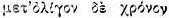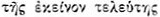. Cp. Nicephorus, ed. C. de Boor, p. 33.

453
заменя „барс”, т. е. 3-ата циклова година; по-сетне обаче той счете за „по-непринудително да се обясни вер от *suver или *sever, чиято първа сричка е изпусната при пренасяне на другия ред. Тя може добре да се постави наред с чуваш. s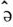vr = „съсел” (Paasonen), на която отговаря кара-кирг. suur. Тя е заимствувана в руския език, дето се казва сурк.” [7] Предположението, че сричката su или se е била изпусната при пренасянето на думата вер от един ред на други, ни се представя твърде пресилено и поради това недопустимо, като се има пред вид, че преписвачът несъмнено ще да е много повече внимавал при преписването на чуждите думи. Затова ние считаме новото обяснение на Микола не съвсем сполучливо и приемаме първото му обяснение като такова, което напълно отговаря на хронологическите данни. Не по-малко проблематично се явява обяснението на втората част в разглеждания израз в четенето както еналем, тъй и ениалем като „единадесет”: он (чуваш, vun, vunu) 10 + алем, защото сближението ен и ени с он ни се показва също пресилено. [8]
Както и да било, според Микола верениалем значи 11-ия месец на
1-вата циклова година, което според нас съвсем е недопустимо, и затова
ще се спрем на по-раншното му обяснение като 11-ия месец на 3-ата циклова
година. В такъв случай за началото на Испериховото управление се дава 11-ия
месец на 663 лунна година [663:12 = 55 + 3], или Исперих е почнал
да управлява 1 лунна година и 8 месеца след смъртта на баща
си и преди изтичането на дадените 3 (или по-право 2 лунни години и 6 месеца)
години на Безмер, следователно подялбата на царството е станала или Исперих
е станал господар на своята част през 11-ия месец на 663 лунна година.
Но тая дата едва ли може да се приеме, защото за смъртта на Исперих, както
ще покажем по-долу, не можем да излизаме вън от 9-ия месец на 723 лунна
година, а пък
7. Вж. Die Chronologie der t rkischen
Donaubulgaren, S. Ab., S. 15
rkischen
Donaubulgaren, S. Ab., S. 15

454
663 лунна година 11-ия месец + 61 лунна година = 11-ия месец на 724 лунна година. Очевидно тук в нещо има грешка и ние я съзираме в това, че верениалем не ще да значи 11-ия месец на бори = 3-ата циклова година. Според нас тоя израз трябва да се чете вер(и) ени-алем, при което алем е сам за себе си и значи „първи” месец, а вери = бри = 3-ата циклова година (ени ще обясним по-долу); в такъв случай ще имаме, че Исперих поел властта самостойно в 11-ия месец на 663 лунна година и тогава веднага ще получим, че от смъртта на Курт до подялбата на царството са изминали само 10 месеца [663 лунна година 1-ви месец — 662 лунна година 3-и месец]. Оттука ясно става, че и годините на Испериховото управление не са пълни 61 лунни години, а само 60 лунни години и 8 месеца [723 лунна година 9-и месец — 663 лунна година], което още веднъж потвърждава изведеното по-горе положение за закръгляване годините на управлението.
И тъй в 11-ия месец след смъртта на Курт (Кубрат)( или в първия месец на 663 лунна година почнало управлението на Исперих, когато той е получил своята част и станал самовластен управител на своята орда-племе. Обаче съгласно с обичаите на турско-азиатските народи той все още е признавал върховната власт на най-стария брат Батбай (Безмер), който е носил титлата велики хан. Това продължавало недълго — до през 665 лунна година, когато Исперих се съвсем отцепил като самостоен господар, а може би още тогава или наскоро след това да е потеглил на запад към устието на Дунав. Няма съмнение, че всички изчисления на годините в Именника са нагодени към царуването на Исперих, който се явява като централна личност в целия списък. Затова са отбелязани само три години от Безмеровото управление, които имат право отношение към Исперих.
По-горе изведохме, че Исперих е управлявал 60 лунни години и 8 месеца, следователно годината на неговата смърт или покачването на Тервел се отнася към 9-ия

455
месец на 723 лунна година [663 лунна година 1-ви месец + 60 лунни години
и 8 месеца]. За покачването на Тервел в Именника са дадени текучитем(текучетем)
твирем, от които месецът напълно се схожда — 9-и. Що се отнася до цикловата
година, то Микола даде две обяснения: 1) по-рано той я раздели на текуч
и и(е)тем и в първото виждаше името на неизвестния княз, а второто
обясни с тур. ит, ет = „куче” — името на 11-ата година в
12-годишния цикъл; 2) но той се отказа по-сетне от това обяснение и дава
такова деление на текучитем: тек-тем и кучи, от които
в първото вижда пак името на неизвестния княз —
Тектем или Токтом
(Toxtomy ? Toktamy
? Toktamy ?) а във второто — тур. ku
?) а във второто — тур. ku a,
монг. xuca, мандж. ku
a,
монг. xuca, мандж. ku a
и джаит. ко
a
и джаит. ко = ,,овен” и го определя като 8-а циклова година „овца”. [9]
Като основания на отказването си от първото обяснение Микола привежда това:
1) че „то не отговаря на хронологическите комбинации и 2) че годината „куче”
се среща иа друго място иначе написана” — тук той разбира етхь в
израза етхь бехти. Но облягайки се на първото основание, ние отхвърляме
второто му обяснение, а на второто основание ще противопоставим неправдоподобността,
какво един преписвач е можел да направи такъв метатезис на сричките в една
дума. Това обясне ние според нас е твърде несполучливо и дори произволно.
[10]
Затова ние приемаме първото му обяснение като такова, което напълно подхожда
на нашите хронологически изчисления, както ей сега ще покажем.
= ,,овен” и го определя като 8-а циклова година „овца”. [9]
Като основания на отказването си от първото обяснение Микола привежда това:
1) че „то не отговаря на хронологическите комбинации и 2) че годината „куче”
се среща иа друго място иначе написана” — тук той разбира етхь в
израза етхь бехти. Но облягайки се на първото основание, ние отхвърляме
второто му обяснение, а на второто основание ще противопоставим неправдоподобността,
какво един преписвач е можел да направи такъв метатезис на сричките в една
дума. Това обясне ние според нас е твърде несполучливо и дори произволно.
[10]
Затова ние приемаме първото му обяснение като такова, което напълно подхожда
на нашите хронологически изчисления, както ей сега ще покажем.
И наистина по-горе изведохме, че Тервел се е покачил на престола в 723
г., но тая година не дава очакваната ет или ит = етх = 11-а циклова година;
обаче веднага ще я получим, щом извадим 700 лунна година или 723—700 =
23:12 = 1 + 11. Тоя резултат ни ясно показва, че през 700 лунна година,
с която не е завършвал никой цикъл, броението на годините у българите е
почвало от „едно”,
9. Вж. Die Chronologie и пр., стр. 15.
10. За текуч вж. по-горе, стр. 225, бел. 73.

456
т. е. почнат бил нов цикъл, а това ни подсеща, че през 700 лунна година българите по някой важен случай или събитие си наредили ново летоброение. Кое е това важно събитие, ще разберем веднага, стига само да превърнем 700 лунна година от Р. Хр. в слънчева: тя се точно равнява на 679 [700:х = 100:97] слънчева, а това е годината, в която била основана българската държава на Балканския полуостров. След тоя резултат заключението е ясно: за изходна точка на собственото си летоброение или ера българите са взели годината на основаването на държавата си, именно 700 лунна година, която напълно съвпада с 679 слънчева година от Р. Хр., следователно българската ера е почвала от 701 лунна година или от 680 слънчева година от Р. Хр.
И тъй ние дохождахме към същия резултат по въпроса за съществуването на собствена българска ера, какъвто ние изведохме според изчисленията на J. В. Bury [11] с тая само разлика, че тук всичко се извежда и доказва без всякакви предварителни хипотези или конюктури, комбинации и размествания на думи и имена в текста на Именника, а това: 1) вече е една сигурна гаранция, че способът на нашите изчисления е напълно верен и правилен и 2) отхвърля мнението, какво текстът на Именника е много развален и изопачен, и затова всички опити за неговото изменение трябва да се считат за произволни и недопустими.
Но ако българите са имали свое летоброение, което е почвало от 701 лунна
година или от 680 слънчева година от Р. Хр., то пита се: от кой месец и
година е почвал първият цикъл на новата ера? По-горе показахме, че лунната
700 година напълно съвпада със слънчевата 679 година, оттук ясно става,
че както лунната 701 година, тъй и слънчевата 680 година са почвали в едно
и също време, от един и същ месец, т. е. първият месец на първия цикъл
11. Вж. нашата статии „Имали ли са българите свое летоброение?”, в СпБАН, I, 1, стр. 30 и сл.

457
на българската ера е бил и пръв месец на септемврийска или януарска година. Обаче даденият за първите трима князе 9-и месец като начало на князуванията им вече посочва, че годината е била септемврийска, защото несъмнено под годините на Авитохол и Ирник се крият цели периоди от историята на българите, както това посочихме на друго място, [12] и че и годините им са нагодени тъкмо за тия периоди. Впрочем за нашата цел не е важно, па и не е нужно да знаем с каква година са броили българите, защото те са нямали, както се види, специални названия за месеците; а пък понеже лунните месеци в по-нататъшното си течение не биха съвпадали със слънчевите, то те не са приели византийските названия на месеците и се ограничили само с означение поред годишните лунни месеци, в които се е случило събитието, т. е. тъй както българите са си служили и по-рано; а щом ни е известен редният месец на лунната година, той всякога може да се изчисли заедно с последната
Установяването на собствено българско летоброене ни натъква на друг не по-малко важен въпрос: кога, т. е. при кой български хан, е била учредена българската ера — въпрос, който е свързан с друг: кога и как е бил съставен списъкът на българските князе — Именникът?
Всички, които са се занимавали с тоя тъй важен паметник, са изтъквали, че нашият Именник се разделя на две части с известието за преминаването на Дунав от българите. Ние обаче мислим, че тия две части се делят не с известието за преминаването на Дунав от българите, а с учредяването на българската ера и че те са съставени не в едно и също време.
Така, в края на първата част се чете:
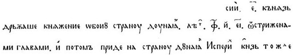
12. Вж. по-rope, стр. 57, 75—76, 130—131.

458
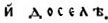 Последните думи не са поставени без значение тъкмо в края на първата част: те ясно посочват, че тая част на нашия Именник е била съставена още през царуването на Исперих; очевидно нейният съставител е бил Исперихов съвременник, който се е ограничил само с това, че е посочил общото число на годините на 5-те (от Авитохол до Безмер) заддунавски князе, а това показва, че когато се е съставяла първата част на Именника, Исперих вече се е намирал отсам Дунав. На несъвременноста на двете части посочва и друго едно нещо, което се неволно хвърля в очи, а то е, че в първата част името на съвременния княз е написано Исперих, а във втората — Есперих, една разлика, която колкото и да е незначителна наглед, все пак издава, че тия две части на Именника са излезли от ръцете на две различни лица, иначе ние бихме очаквали да срещнем в тях едно и също написване на това име. Най-сетне вече самата разлика в способа на изчисленията на годините не по-малко свидетелствува, че тия две части не са били съставени в едно и също време. И тъй ние имаме пълно основание да приемем, че нашият Именник се състои от две части, написани в разно време и от разни лица, и то първоначално на гръцки език, както това се признава от всички.
Не може да се приеме също предположението, че тия две части представят
съвършено отделни документ и напълно самостойни, които са били сглобени,
компилирани, отпосле. [13] Това предположение би било
твърде вероятно, ако да знаехме, че наистина нашият паметник е свършвал
тъкмо с Умор и не е продължавал по-нататък. Обаче самият Именник, тъй както
е дошъл до нас, прави впечатление по-скоро на един прекъснат, но не и довършен
текст; освен това твърде характерната връзка между двете
13. Така Бйори приема, че Именникът е бил компилиран наскоро след датата, на която той свършва, т. е. към началото на 70-те години на VIII в. при приемника на Умор, като се позива на това, че за царуването на последния княз (Умор) са дадени 40 дена, когато за другите са отбелязани само годините, но не и месеците и дните (стр. 133 и 141).

459
части, която ще посочим по-долу, ни кара да приемем, че тук не е могло да става никакво компилиране и оттука двете части на Именника не са били първоначално два отделни документа, а имаме във втората част продължение на първата; най-сетне случайното очевидно попадане на нашия текст между статиите на „Елинския и римски летописец” заедно с току-що, посочените особености ни навеждат на следните съображения за произхода и съдбата на тоя наш извънредно ценен паметник.
Първата част, както казахме, е била съставена при Исперих и може би
по негова заповед. Сношенията на Исперих с Византия почнали, откак той
минал Дунава и мирно се поселил на византийска територия в днешна Северна
Добруджа по силата на един договор, за да пази като съюзник дунавската
граница на империята от нахлуването на други варвари, като станал в същото
време в един вид полузависимост от византийския император. [14]
По-сетне обаче, когато Исперих в съюз с мизийските славяни сполучил да
се отцепи от Византия и да основе самостойна държава в 679 г., [15]
българите, като приемали гръцкия език за официален, явявало се необходимо
да приемат и византийското летоброение. Обаче в случая те се оказали консерватори:
по едни или други причини те не се решили да се откажат от старата си хронологическа
система с 12-годишния й лунен цикъл и като взели за основа византийското
летоброение, почнали да изчисляват византийските години с лунни години
според старото си летоброение. Така е била съставена първата част на нашия
Именник при Исперих, когато мисълта за учредяване на нова българска ера
не ще да се е още породила, защото в такъв случай съставителят на първата
част не би пропуснал да отбележи това по един или друг начин тъй, както
той намерил за нужно да изтъкне преминаването на Дунав като важно за българите
събитие.
14. За това вж. по-горе, стр. 189—193.
15. Вж. по-горе, стр. 198—205.

460
При Тервел обаче, когато след цариградските тържества в 705 г. българската
държава биде официално призната от византийския император за независима
и почти равна на Византия, [16] българите по чисто политически,
а може би и културни съображения както във външните, тъй и във вътрешните
си отношения отново се обърнали към старата си хронологическа система с
12-годишния й лунен цикъл и като взели за основа годината на основаването
на държавата — събитие, което се явявало като изходна точка на новия им
политически живот, турили началото на своя собствена ера. Пред вид на това,
че изчисленията по нея безспорно почнали от времето на Тервел, именно когато
са били изчислени след смъртта на Исперих годините на неговото управление
и цикловата година на неговото покачване на престола, ние отнасяме учредяването
й към началото на VIII в., откогато са почнали българите да водят хронологическия
списък на своите господари по новото летоброение. Затова и втората част
на Именника, която се почва с думите:
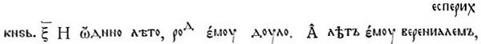
и се отнася след учредяването на новата ера, не можем да смятаме като
отделен документ, а само като продължение на първата.
Да се убедим в това, доста е да покажем връзката между двете части.
Тая връзка ние намираме в израза верениалем, който ние разчленихме на вер(и)
ени-алем. Без да претендираме, че познаваме източните езици, ние си
позволяваме: 1) да обясним средната дума с тур. ени- = „нов” или
ени-алем
= „нов първи месец”, защото, както посочихме по-горе, лунната 700 година,
след която почва новата ера, не дава завършен цикъл, и 2) да видим в него
тъкмо посочване на новото летоброение, а в целия израз — съединение
годината на Испериховото покачване вер(и) — бри
= вълк,
трета циклова година според по-раншното летоброение, основано
на византийското, с нов
16. Вж. по-горе, стр. 225 и сл.

461
алем = първия месец на първата циклова година по новата ера, като две начални и еднакво важни по значение дати в управлението на Исперих. Ако това наше съображение и обяснение е приемливо, то в него имаме още едно важно потвърждение за българското летоброение.
Но на какво и как се е водил хронологическият списък на българските господари? — Запазилите се до наше време епиграфски паметници от езическата епоха на нашата история главно от първата половина на IX в., ни ясно показват, че ако българските ханове от тая епоха си записвали на гръцки език своите административни разпоредби, разни видове официални актове, договори със съседите си, летописни записи и изобщо всичко, което трябвало не само да се обяви на населението, но и да се запази за следните поколения — ако всичко това се е записвало върху каменни стълбове, които са украсявали, както се мисли, колонадите пред дворците на българските ханове и при други обществени постройки, [17] то надали можем да се съмняваме, че и хронологическият списък на българските господари от езическа България се е водил на гръцки език също така на такива стълбове последователно още от самото начало преди и след учредяването на българската ера, на което право посочва и лапидарният характер на самия текст. Твърде е възможно, щото тоя царски списък да е продължавал на няколко такива стълба, съседни един на други, и първият от тях да е свършвал с хан Умор.
По-сетне обаче, когато в християнско време нуждите на новата вяра са
изисквали издигането на нови постройки, особено на църкви, тия същите стълбове
като паметници на миналото, заслужаващи да се запазят, били са употребени
и като строителен материал за новите постройки, както това показаха разкопките
при с. Абоба; при това те са претърпели едно разместване, каго се пренасяли
от
17. К. Иречек, Княжество България, т. II, стр. 238. — Ср. също Абоба-Плиска, стр. 116 и 217.

462
старата резиденция на българските ханове — Плиска, в новата — Преслав,
и по околните манастири. Още по-голямо разместване ги е сполетяло по-късно,
когато след страшното опустошение и разорение на източните столици на Първото
българско царство и изобщо на Североизточна България при първото (от Иван
Цимисхий) и второто (от Василий II) завоевание и особено при нахлуванията
на печенежките орди през втората половина на XI в., много от тия оцелели
паметници на българската старина били отнесени далеч от предишното си местонахождение,
особено през Второто българско царство, с цел да бъдат запазени. В това
отношение най-добри примери представляват два такива от времето на Омортаг
стълба с надписи — Търновският и Чаталарският. Първият е оня, който днес
се намира в търновската стара църква „Св. 40 мъченици”; за него може сигурно
да се каже в настояще време, че е бил донесен от околностите на старата
резиденция на българските ханове — Плиска, [18] и поставен
наред с другите стълбове още при постройката на църквата преди 1230 г.
при Иван Асен II (1218—1241). Вторият стълб, както ни говори и самият му
надпис, първоначално бил издигнат на мястото на стария Преслав, на брега
на р Тича (Голяма Камчия,) [19] а бил намерен между
нивите на селата Чаталар (сега Крумово) и Труджа (Троица), дето са били
разкопани основите на доста голяма църква [20] и дето
се е издигал манастир в средните векове, който е съществувал оше в XVII
в., както това разяснихме на друго място. [21]
18. Подробно на това вж. по-горе, стр. 417 и сл. — Също и Притурка № 16.
19. За тоя надпис вж. по-горе, стр. 408 и сл. — Също и Притурка № 15.
20. Вж. Абоба-Плиска, стр. 544—554.
21. В “Български преглед”, г. IV, кн. 3 (1897); стр. 54—61. — [Както вече бе посочено по-горе, образуването на българската държава не е станало в 679 г., а така също и Чаталарският надпис няма нищо общо с Преслав.]

463
Ние искаме да вярваме, че подобна е била съдбата и на оня каменен стълб,
на който бил изрязан хронологическият списък на първите български господари
до Умор включително. Занесен по някоя може би случайност в някой манастир
и влязъл между строителния материал на някоя църква, тоя стълб е обърнал
със своя интересен надпис вниманието, ако не на самия монах-съставител
на „Елинския и римски летописец”, който в първата си постара редакция е
получил началото си в България, [22] то поне на някой
негов преписвач, който, подбутнат от патриотично чувство, счел за нужно
да го преведе от гръцки на старобългарски, а като паметник на българската
царска старина, който и по съдържание, и по характер стои близко до библейска
IV книга на царствата, той поместил превода си тъкмо след последната. Това,
няма съмнение, е могло да стане в една епоха, когато у българите се бил
появил особен интерес към тяхната старина и нейното изучаване, т. е. не
по-рано от XIII, а може би и в XIV в. към което време се отнася и появяването
на първата редакция на „Елинския и римски летописец”. [23]
След тия предварителни бележки ще продължим изчисленията по-нататък.
От показаното по-горе за времето на Испериховото управление може да
се изведе във връзка с българското летоброение, че Исперих е бил вожд и
господар на своята орда 38 лунни години [700 лунна година — 662 лунна година]
преди основаването на държавата, а българо-славянски господар — 22 лунни
години и 8 месеца [60 лунни години и 8 месеца — 38 лунни години], или той
е
22. К. Иречек, История болгар, одес. изд., стр. 566—567. — П. А. Сырку, Время и жизнь патриарха Евфимия Терновского, Петроград, 1899, стр. 501 и сл.
23. Вж. нашата статия „Имали ли са българите и пр.”, пак там, стр. 32—37.

464
умрял през 9-ия месец на 23 лунна години от Б. Е. Няма съмнение, че и годините на следващите подир Исперих князе са изчислени също така по българското летоброение и пак с 12-годишен лунен цикъл. Обаче и тук се забелязва, че годините за продължителността на управлението, изразени с буквени цифри, не се схождат с цикловите години, което, разбира се, донейде се обяснява, както вече посочихме, със закръгляването годините в буквените цифри. Така например за Тервел са дадени 21 лунни години, които, събрани с 22 лунни години и 8 месеца — Исперихови от Б. Е., ще дадат 43 лунни години и 8 месеца, или закръглени 44 лунни години от Б. Е.; но 44 лунни години дава 8-а циклона година, а не дванш = 4-а циклова година, която е дадена за покачването на неизвестния княз — очевидно годините на Тервеловото управление са били по-малко. Същото се забелязва и в годините на неизвестния княз, за когото са дадени 28 лунни години, защото 44 + 28 = 72 лунна година, която обаче дава 12-а циклова година дохс, а не тох = 10-а, както бихме очаквали според Именника. Като приемаме, че цикловите годияи, са вярно и точно поставени, ние мислим че по тях ще бъде възможно да се установят и истинските години на царуванията. Ние ще се обърнем към същия способ, с който си послужихме за първата част на Именника, т. е. ще почнем пак с установена и известна хронологическа дата.
От Теофан знаем, че Телец е бил избран за княз в 6254 г. от С. М. по
александрийската ера [24], или в 762 септемврийска година
от Р. Хр., която е продължавала от 1 септември 761 до 31 август 782 г.
В Именника за покачването на тоя княз е дадена година сомор алтем,
т. е. в 6-я месец на цикловата сомор година. Първоначално Микола
обясни тая дума с мишертатар. somoran = Zeiselmaus =- „попадийка, полска
мишка” и я предложи като
24. Theophanes, ibid., p. 492. — Вж. по-горе, стр. 276 и сл. — Ср. нашата статии „Имали ли са българите” и пр., пак там, стр. 46.

465
1-ва година на лунния 12-годишен цикъл, но по-сетне той се отказа от това обяснение, „защото обяснението на сомор като година „мишка” е невъзможно по хронологически основания” [25], и даде друго обяснение: „както ще покажем по-долу, пише Микола, от него (сомор) трябва да се отнеме първата сричка со и да се прибави към -ви-нех; -мор пък е съкратено от морен, отпадналото -ен в края е причинило написването алтем вм. алтом (ср. то-халтом). В морен ние имаме названието на годината „кон”, монгол. морин, която е била заимствувана много рано в руския език: мерин = Wallach = „скопен жребец”. Това обяснение се потвърждава и с хронологически комбинации.” [26]
Защо трябва сричката со да се отнеме от сомор и да се придаде на винех,
Микола обяснява така: „Телец се покачил на престола в 761 г., а това е
година „вол” (шегор). Датата шегор алем се отнася към Телец,
а не към неговия предшественик. Ние имаме в целия списък (Именника) там-сам
своеобразни размествания на думи и отделни срички, които могат да се обяснят
с това, че първоначалният текст по гръцки съставения надпис бил нанесен
на една кръгла колона, подобна на оная с Омортаговия надпис от Чаталар.
Редовете са вървели не всякога съвсем право и не са били изобщо от една
и съща дължина. По тоя начин и началната сричка (со) от името на
Телецовия предшественик, и неговата дата са попаднали под Телец. По-нататък
сричката им, която е принадлежала на мор (в Именника сомор) (морим
= кон вм. морин, ср. дилом вм. дилон), дошла между
думите 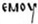 и  и неразбрана от преписвача, била изменена на , .
Предшественикът на Телец се казвал Совинех (Sovinec),
от което ясно става защо гърците го наричали 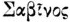
(Savinos). Той управлявал 7 години, затова и покачването му в 754 г. се
пада в година „кон” (6-и месец) = морин алтом.” [27]
и неразбрана от преписвача, била изменена на , .
Предшественикът на Телец се казвал Совинех (Sovinec),
от което ясно става защо гърците го наричали 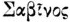
(Savinos). Той управлявал 7 години, затова и покачването му в 754 г. се
пада в година „кон” (6-и месец) = морин алтом.” [27]
25. J. Mikkola, Die Chronologie etc, S. 13.

466
И тъй, за да обясни как началната сричка со е била откъсната от името Винех и придадена към думата сомор, Микола бил принуден да направи следните изменения: 1. да отнесе предполаганата година на Винех шегор алем към Телец, а Телецовата към Винех и 2. да прехвърля една сричка от края на думата морин в началото й. Нам ни се струва, че такива големи размествания не могат да се допуснат, а също и сричките на една и съща дума да се прехвърлят напред или назад, защото вниманието на преписвача, съсредоточено на една дума, може да бъде отвлечено и нарушено само под влиянието на друга дума, съседна или над нея. Наистина цикловата година на Винех е объркана, както ще покажем по-долу, но това е станало не поради прехвърлянето на цели циклови с месеците от един ред на други, а само под влиянието на годината на неговия предшественик. Затова ние не можем да приемем второто обяснение на сомор от Микола, което се явява твърде пресилено, а ще работим с първото — че сомор е година „мишка” = 1-ва година в цикъла, което и по значение, и по хронологически данни напълно подхожда, и то само ако сомор остане на мястото си, както е в Именника.
И наистина според Именника Телец се покачил през сомор = 1-ва година и в алтем (вж. алтом) = 6-ия месец, т. е. през 6-ия месец на първата година от известен цикъл, на което напълно отговаря септемврийската 762 слънчева година. И така е: 762—680 = 82 слънчева година, която дава 85 лунна година (82 + 3 интеркалация); а 85:12 = 7 + 1, т. е. дава тъкмо сомор циклова година. И тъй Телец се е покачил през 6-ия месец на 85 лунна година от българската ера, която се = на 81,88 слънчева година от Б. Е., или 6-ия месец се пада през ноември 761 г. от Р. Хр., или в септемврийската 762 година.
Кормисош (Винех засега ще оставим настрана) се покачил на престола 24 ( = 17 + 7) години преди Телец; тогава 85—24 = 61 лунна година, която обаче дава сомор [61:12 = 5 + 1] циклова година, а нам ни трябва шегор твирем, т. е. 9-ия месец на 2-а циклова година, следова-

467
телно Кормисош се е покачил през 9-ия месец на 62 лунна година от Б. Е., или след изтичането на 61 лунна година и 8 месеца; в такъв случай за Кормисошовото и Винеховото управление се падат 22 лунни години и 9 месеца [ = 84 лунни години и 5 месеца — 61 лунни години и 8 месеца], оттука ясно става, че Кормисош е управлявал непълни 17 лунни години, а Винех — непълни 7 лунни години, а понеже Винех се е покачил през месец алем = 1-вия месец на неизвестната засега циклова година, то той ще да е управлявал 6 лунни години и 5 месеца; тогава за Кормисош остават 16 лунни години и 4 месеца, или Винех се с покачил през 1-вия месец на 79 лунна година от Б. Е.
От тия изчисления може: 1) да се потвърди още веднъж изведеното вече положение за закръглеността на годините на управленията и 2) да се приеме, че предложената още от А. Куник конюнктура за годината на Винех — 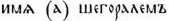, да се чете 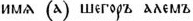, [28] чрез което и самият текст в това място отстъпва от общата формула н става дори безсмислен, е невярна, защото, ако наистина годината на Винех е била шегор, то годините за управлението на неговия предшественик Кормисош, които почва тъкмо с шегор циклова година, трябваше да бъдат не по-малко от 24 лунни години, а те са само 17 или, както видяхме, по-точно, 16 лунни години и 4 месеца. Очевидно е, че в цикловата година на Винех има грешка, която обаче лесно може да се поправи и да се обясни нейният произход.
Според нашите изчисления Винех се е покачил през 1-вия месец на 79 лунна
година от Б. Е., която дава циклова година 7 [79: 12 = 6 + 7], т.
е. „кон”, а според обясненията на Микола година „кон” се означава с монгол.
морин
(рус. мерин = „скопен жребец”), следователно за цикловата година
на Винех в оригинала ще е стояло морин-алем или мерин-алем;
в такъв случай лесно може
28. А. Куник и В. Розен, Известия Ал Бекри и других авторов о Руси и славянах, Петрроград, I, стр. 136.

468
да се обясни как от тоя израз е произлязло : преписвачът е почнал да пише морин и, след като написал първата сричка , той е погрешно погледнал на реда на предния княз, дето стои 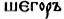, а понеже тия думи са били за него непонятни, то той безсъзнателно продължил с написването на тая последната дума и по тоя начин се получило 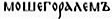; по-сетнешните преписвани, за да осмислят колко-годе тоя израз, прибавили отпред, а 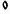 изменили на и на 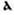 и се получило според Москов — синодален препис — 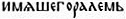, а според Погодиновския ръкопис 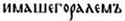. От добитите по тоя начин от нас резулати става ясно, че не се явява никаква нужда (па и безполезно ще бъде) предположението, че Винех е едно и също лице, що и Сабин у византийските хронисти, нито да се поставя Винех след Телец, както това прави Маркварт и Бьори го последва, нито да се прехвърля цикловата година на Винех към Телец и обратно или пък да се отнема от сомор сричката со и да се придава към името на Винех, както се опита Микола да направи, защото нито за Телец ще получим шегор алем, нито за Умор — дилом тутом.
За Севар е дадена циклова година тох алтом, или той се е покачил в 6-ия месец на 10-а циклова година която може да даде или 58 лунна година, или 46 лунна година от Б. Е., обаче първата година не може да се приеме, защото Севар е управлявал повече от 12 лунни години, остава следователно 46 лунна година, или Севар се е покачил на престола в 6-ия месец на 46 лунна година от Б. Е., оттука Севаровото управление е продължавало 16 лунни години и 3 месеца [= 9-и месец 62 лунна година — 6-и месец 46 лунна година] срещу показаните в текста 15 години.
Още по-невероятни се явяват годините на неизвестния княз. Неговата циклова година е дванш шехтем, или той е почнал да управлява през 8-ия месец на 4-а циклова година, която може да даде или 28, или 40 лунна година от Б. Е., но от тях първата е неприемлива, за-

469
щото за Тервел и Исперих биха останали малко години до началото на българската ера; тогава началото на управлението на неизвестния княз ще трябва да отнесем към 8-ия месец на 40 лунна година от българската ера, или той е управлявал 5 лунни години и 10 месеца [= 6-и месец 46 лунна година—8-и месец 40 лунна година] срещу показаните в текста 28 години очевидно погрешно, както ще покажем по-долу.
Цикловата година за покачването на Тервел е, както по-горе посочихме, итем или етем твирем, т. е. той се е покачил през 9-ия месец на 11 циклова година, която може да ни даде или 11 лунна година, или 23 лунна година от българската ера; от тях само последната, както вече видяхме, подхожда към хронологическите данни. Тогава Тервел е поел управлението през 9-ия месец на 23 лунна година от българската ера, или той е управлявал 16 лунни години и 11 месеца[ = 39 лунна година и 7 месеца —22 лунна година и 8 месеца] или закръглени 17 лунни години, а не 21 лунни години, както стои в текста погрешно.
Че годините за управленията на Тервел — 21, неизвестния — 28 и Севар — 15, са погрешени при преписването, се доказва: 1) с това, че годините на Кормисош — 17 и на Винех — 7 (закръглени), както и годините за управлението на князете от първата част на Именника се напълно схождат с цикловите години, и 2) с това, че ако се вземе сумата на годините на първите трима князе тъй, както те са показани в Именника, и на другите князе, то тя няма да даде същото число, което ние бихме получили от разликата между две години, известни нам и установени по други извори. Така например от основаването на царството в 679 г. до покачването на Телец в 761 г. са изминали 82 слънчеви години, или 84,5 лунни; за същия период в Именника са 111 ( = 23 + 21 + 28 + 15 + 17 + 7) лунни години, получава се следователно една разлика от 25,5 лунни години в повече; а пък според нашите изчисления излиза тъкмо 84 лунни години и 5 месеца [= 22 лунни години и 8 месеца + 16 лунни години и 11 месеца +

470
+ 5 лунни години и 10 месеца +16 лунни години и 3 месеца + 16 лунни години и 4 месеца + 6 лунни години и 5 месеца]; разликата от 25,5 лунни години се е получила тъкмо от погрешните години на Тервел, Неизвестния и Севар в Именника спроти изведените от нас техни години. И така е: 21 — 16 лунни години и 11 месеца = 4 лунни години и 1 месец дава Именникът в повече; 28 лунни години—5 лунни години и 10 месеца = 22 лунни години и 2 месеца също в повече; 16 лунни години и 3 месеца — 15 лунни години = 1 лунна година и 3 месеца в по-малко, или всичко 25 лунни години [4 лунни години и 1 месец + 22 лунни години и 2 месеца — 1 лунна година и 3 месеца] в повече; разликата 0,5 лунна година произлиза от закръглеността на 21, 28 и 15 лунни години в Именника. Тоя резултат ни окончателно убеждава, че нашите изчисления и изобщо нашият способ за изчисления е съвършенно верен.
Ако се обърнем към данните на Именника от Телец нататък, ще видим, че привидното несъгласуване между годините на царуванията и цикловите години така също лесно се обяснява. За Телец са дадени три години царуване, следователно той се е поминал в 88 [ = 85 лунни години + 3 лунни години] лунна година; но 88 лунна година от българската ера не дава цикловата година дилом тутом, или 4-ия месец на 6-а циклона година, защото 88:12 = 7 + 4; обаче търсената година веднага ще намерим, ако към 85 лунна година и 6-и месец прибавим 4 лунни години и 10 месеца [= разликата между „дилом тутом” и „сомор алтем”], а именно 90 лунна година 4-и месец, т. е. Умор се е покачил на престола през 4-ия месец на 90 лунна година от българската ера, която наистина дава циклона година дилом [90:12 = 7 + 6]. Това несъгласуване на Телецовите години на управлението с цикловата година и месеца към нея може да се обясни двояко: или че при преписването е побъркана годината, като вместо 5 (закръглено) е написано 3, което впрочем е недопустимо, защото за смъртта на Телец по други вече данни не мо-

471
жем да отиваме по-нататък от 765 септемврийска година, [29] или пък че тук в Именника е изпуснат един български княз — Сабин, когото споменатите византийски хронисти поставят между Телец и Умор и за когото съобщават, че е управлявал твърде късо време и сетне избягал доброволно от България в Цариград. [30] Като имаме пред вид тия данни и като приемаме, че Телец е управлявал пълни 3 години (впрочем той може би е царувал по-малко, т. е. повече от 2 и по-малко от 3 години, според изведеното вече положение за закръглеността на годините за управленията, но в дадения случай точно не могат да се посочат поради пропуска), то ясно става, че той е бил убит през 6-ия месец на 88 лунна година от българската ера, тогава за Сабин остават 1 лунна година и 10 месеца, или Сабин е избягал от България през 4-ия месец на 90 лунна година от Б. Е., а Умор, който е князувал всичко 40 дена, бил свален в края на 5-ия или в началото на 6-ия месец същата 90 лунна година.
С това се завършват всичките данни на Именника. Но преди да представим
общия резултат на нашите по-горе изложени изчисления, считаме за нужно
да се спрем и върху друг един важен въпрос: ако българите са взели за основа
на своето летоброение византийското, то не трябваше ли да очакваме, че
и те, както и византийците в онова време, са смятали от С. М., а не от
Р. Хр.? Няма съмнение, че след учредяването на българската ера българите
са броили, както видяхме, по годините на своето летоброение, като са ги
съпоставяли с индиктионите на византийското летоброение, както това намираме
на Чаталарския надпис. [31] Но в същото време те са
смятали и от С. М., което за тях е било много по-удобно като за езичници,
които не са знаели нищо за Христа, както това се доказва от един фрагментиран
надпис от времето на
29. Вж. по-горе, стр. 284—285.
30. Вж. по-горе, стр. 286—287.
31. Вж. притурка № 15.

472
Омортаг, дето е дадена право годината от С. М. 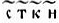. [32] Обаче изчисленията на годините са правени за разни времена различно.
При изчисленията на годините от С. М. в първата част на Именника до учредяването на българското летоброение за основа е взето византийското летоброение с 5500 от С. М. до Р. Хр., към които се прибавяла съответната лунна година от Р. Хр., като се запазвал напълно характерът на българските изчисления с лунни години и с 12-годишен цикъл, т. е. слънчевата година от Р. Хр., в която се падало даденото събитие, са обръщали в лунна и след това са намирали на коя циклова година и месец в 12-годишния цикъл тя отговаря. И тъй за да се намери българската циклова година на една дадена година от С. М. по българското летоброение, ще трябва най-първо да се извадят 5500, след това резултатът, който представя лунни години от Р. Хр., да се раздели на 12 и полученият остатък ще ни даде търсената циклова година. По тоя начин ще имаме, че от С. М. по българското летоброение се покачил:
Авитохол през 9-ия месец на 5650 [5500 + 150 лунна година от
Р. Хр.], която дава дилом циклова година.
Ирник през 9-ия месец на 5950 [5500 + 450 лунна година от Р.
Хр.], която дава дилом циклова година.
Гостун през 9-ия месец на 6100 [5500 + 600 лунна година от Р.
Хр.], която дава дохс циклова година.
Курт през 3-ия месец на 6102 [5500 + 602 лунна година от Р.
Хр.], която дава шегор циклова година.
Безмер през 3-ия месец на 6162 [5500 + 662 лунна година от Р.
Хр.], която дава шегор циклова година.
Исперих през 1-вия месец на 6163 [5500 + 663 лунна година от
Р. Хр.], която дава вери циклова година.
При изчисленията на годините от С. М. във втората част на Именника,
т. е. след учредяването на Б. Е., бил запазен същият принцип с тая само
разлика, че към 5500
32. Вж. по-горе, стр. 378, бел. 4 и 398, бел. 45. — Ние работихме по-горе с години от Р. Хр., за да имаме по-малки числа при изчисленията.

473
година от С. М до Р. Хр. се прибавя 680 слънчева година от Р. Хр. до първата (включително) година на Б. Е.; получената 6180 година от С. М. до Б. Е. ни дава едно постоянно число, което е кратно на 12, следователно имаме завършен цикъл [33]; към него се прибавяла българската лунна година, в която се падало даденото събитие, и по тоя начин се получавала годината от С. М., в която се е случило известно събитие, като и тук се е запазвал напълно характерът на българските изчисления с лунни години и с 12-годишен цикъл. Тук изчисленията се значително опростяват, защото, без да се вадят 5500 от дадената година от С. М. по българското летоброение, направо може да се получи цикловата българска година, след като дадената година от С. М. се раздели на 12, т. е. манипулира се също така, както когато търсим известен индиктион по византийското летоброение от С. М. По тоя начин ще имаме, че от С. М. по българското летоброение се е покачил :
Тервел през 9-ия месец на 6203 [6180 + 23 лунна година от Б.
Е.], която дава етх циклова година.
Неизвестният през 8-ия месец на 6220 [6180 + 40 лунна годика
от Б. Е.], която дава дванш циклова година.
Севар през 6-ия месец на 6226 [6180 + 46 лунна година от Б.
Е.], която дава тох циклова година.
Кормисош през 9-ия месец на 6242 [6180 + 62 лунна година от
Б. Е.], която дава шегор циклова година.
Винех през 1-вия месец на 6259 [6180 + 79 лунна година от Б.
Е], която дава морин циклова година.
33. Около това число 6180 се забелязва едно твърде любопитно нещо: то, делено на 12, дава цяло чило 515, т. е. че от С . М. до Б. Е. са се изминали 515 цикъла (12-годишни). Същото число дава и Именникът, както видяхме, за князуването на първите 5 князе 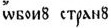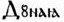; обаче да се счита, че и в единия, и в другия случай тия числа представат едно и също нещо, с невъзможно: 1) защото първото 515 дава цикловете от С. М. до Б. Е. , когато второто дава годините от 150 л. г. до 665 л. г., т. е. от покачването на Авитохол до отцепването на Исперих от брата си Безмер, и 2) защото първите 515 цикъла съдържат слънчеви години, когато вторите са лунни години.

474
Телец през 6-ия месец на 6265 [6180 + 85 лунна година от Б. Е.],
която дава сомор циклова година.
[Сабин през 6-ия месец на 6268 [6180 + 88 лунна година от Б.
Е.], която дава дванш циклова година].
Умор през 4-ия месец на 6270 [6180 + 90 лунна година от Б. Е.],
която дава дилом циклова година.
Така е изчислена годината за основаването на Преслав, дадена в Омортаговия надпис от Чаталар (сега Крумово). Там се чете, че събитието е станало в 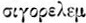 българска циклова година, или 15-ия индккткон по византийската ера. 15-ият индиктион отговаря на 6330 година от С. М. ( = 5508 + 822), която е продължавала от 1 септември 821 до 31 август 822 г. от Р. Хр., а , или шегор алем по българското летоброение, т. е. 1-вия месец на 2-ата (вол) циклова година отговаря на 1-вия месец от 6326 година от С. М. [ = 6180 от С. М. до Б. Е. +146 лунна година от Б. Е., в която е станало събитието], или събитието се отнася към 1-вия месец на 146 лунна година от Б. Е., която наистина дава шегор циклова година [146:12 = 12 + 2] и е почвала от 28 август 821 [145 лунна година =140,65 слънчева година + 680 = 820,65] светлинна година от Р. Хр., а оттука 1-вият месец на 146 лунна година ще бъде от 28 август до 23 септември 821 г., а по византийската септемврийска година ще бъде 1-вият месец на 822 г. от Р. Хр., т. е. тъкмо началото на 15-ия индиктион. И тъй основаването на Преслав се отнася към септември 821 г. от Р. Хр. [34]
По същия начин ще да е изчислена и годината 6328 от С. М. в гореспоменатия фрагментиран надпис: 6328 — 6180 = 148 лунни години = дванш циклова година от Б. Е., която е продължавала от 142,59 до 143,56 слънчева година, или от 6 август 823 до 24 голи 824 г. от Р. Хр.; по-точно не може да се определи, защото на надписа не е запазен месецът. [35]
В християнска обаче епоха редом с посочения тук на-
34. Нашите изчисления правим с точност до 0,01 и годината смятаме 365 дена.
35. За тоя надпис вж. по-горе, стр. 378, бел. 4 и 398, бел. 45.

475
чин срещаме и друг, в който се смята от С. М. до Р. Хр. с 5505. Това е способът на еп. Константин, с който последният е работил при определяне датата на своите 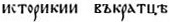. [36] Там той дава годината 6406 от С. М., която е свършвала в 12-ия индиктион на византийската ера. Тоя индиктион е продължавал от 1 септември 893 г. до 31 август 894 г. от Р. Хр. Да видим дали нашата година дава посоченото тук 12-месечие: 6406 — 6185 = 221 лунна година = 5-та (дракон) циклова година от Б. Е., която е продължавала от 213,40 до 214,37 слънчева година, или от 27 май 894 до 15 май 895 г. от Р. Хр., следователно „Историкиите” на еп. Константин са били съставени между 27 май и 1 септември 894 г.
По същия начин с 6185 от С. М. са изчислени и следните дати от българската история.
1. За покръщането на българите са известни две дати: 6376 и 6377 от
С. М., [37] а в припискаха на Тудор Доксов е дадена
по българското летоброение 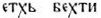,
[38]
т. е. това събитие е станало през 5-ия месец на 11-а циклова година. Ние
първом ще работим с 6376 г., а после ще покажем как е произлязла втората
6377 г. И тъй 6376 г. дава 191 [ = 6376 — 6185] лунна година от Б. Е.,
или събитието е станало през 5-ия месец на 191 лунна година, която дава
тъкмо 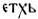 [191:12
= 15 +
11]; 5-ият месец на
36. Вж. нашата статия „Имали ли са българите и пр.”, стр. 59—62.
37. Подробно за изворите на годините и за самите години на българското покръщане вж. пак там, стр. 62—73. — [Вж. П. Петров, За годината на налагане християнството в България, ИИИ, т. 14—15, София, 1964, стр. 569—589, където годината на покръстването е уточнена на 864. Също там са разгледани и всички онези случаи, които според В. Златарски говорели за особена българска ера, като е показано, че разликата в годините се дължи на грешка в един от българските оригинали на Историкиите на Константин Преславски.]
38.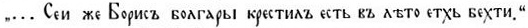
— (Френският славист А. Вайан предложи ново четене на израза „етхь
бехти” в смисъл на „етхб” и „ехти”, в което той вижда
цифровото значение на годината на покръстване на българите (6372 — 5508
= 864). Вж. A. Vaillant et M. Lascaris, La date de la conversion
des Bulgares, Revue des tudes
slaves, t. XIII, Paris, 1933, p. 5—6.]

476
191 лунна година е продължавал от 184,62 до 184,71 слънчева година от Б. Е., или от 864,62 до 864,71 от Р. Хр., или от 17 август до 15 септември 865 г., следователно той с последните си 15 дена влиза в 1-вия месец на 866 септемврийска година; това ясно показва и произходът на 6377 г.: тя е била изчислена по септемврийската 866 г., а оттука може да се заключи, че българското покръщане се отнася към I половина на септември 865 г. от Р. Хр.
2. За „Преложение книг на словенский язык” се дава 30 години след покръщането на българите, т. е. в 6406 или 6407 г., които се намират в зависимост от годината на покръщането; но понеже 6376 г., както видяхме, е по-точна, то и в случая ще работим с 6406 г., която дава 221 лунна година [ = 6406 — 6185] от Б. Е.; а тъй като „преложението” е станало точно след 30 години от покръщането, то първото ще трябва да се отнесе не по-рано от 5-ия месец на 221 лунна година от Б. Е., който продължавал от 213,72 до 213,79 слънчева година от Б. Е., или 893,72 до 893,79, или от 23 септември до 18 октомври 894 г., оттука „преложение книг” се отнася към не по-рано от 23 септември 894 г., ила. към началото на 895 септемврийска година от Р. Хр., която, ако се изчисли по българското летоброение, ще даде 6407 г. от С. М.
3. В приписката на Тудор Доксов за смъртта на княз Борис е дадена дата
в събота вечер на 2 май 6415 г., индиктион 14-и. [39] Тая година обаче
дава не 14-и, а 10-и индиктион, следователно трябва да се предполага, че
една от тия хронологически данни е погрешна. Де е грешката? Ние мислим,
че поставеният тук 14-и индиктион не е нещо случайно; очевидно е, че първоначално
в текста е стояла година, която наистина е давала 14-и индиктион, а тая
година е 6419, която впрочем по византийското летоброение не дава съответната
година за смъртта на кн. Борис 2 май 907 г. в събота; обаче ако я изчислим
по българ-
39. За невероятността както на тоя индиктион, тъй и на другия към 6414 г. в същата приписка вж. „Имали ли са българите свое летоброение”, стр. 79—80.

477
ското летоброение, то ще получим точно годината. И така е: 6419 — 6185 = 234 лунна година от Б. Е., която е продължавала от 226,01 слънчева година до 226,98 слънчева година от Б. Е., или от 906,01 до 906,98 слънчева година, или от 4 януари, до 27 декември 907 г. от Р. Хр., в което време се пада тъкмо 2 май 907 г., и то в събота. Тоя резултат ни дава възможност да поясним как е произлязла грешката: в първоначалния текст е стояла 6419 г. без означение на индиктиона; по-сетне някой преписвач, който е мислил, че тая година е изчислена по византийската ера, прибавил съответния индиктион — 14-и, без да си даде отчет дали той дава съответната година. Друг обаче преписвач, комуто може би принадлежи достигналият до нас ръкопис, като забелязал, че в 6419 г. 2 май не се пада в събота, изменил я на 6415 според византийското летоброение (с 5508), без да измени и индиктиона от 14-и на 10-и. По тоя начин се получило това несьгласие на годината с индиктиона. По същия начин е било постъпено и с годината 6414 индиктион 10-и (вм. 13-и, грешка вероятно при преписването), дадени в същата приписка на Тудор Доксов за превода на „словата” на Атанасий Александрийски против арианите от еп. Константин: първоначално в текста е стояла годината 6418, която е била изменена в 6414 заедно с изменението на 6419 в 6415, без да се поправи и индиктионът от 13-и на 9-и. И тъй и в тая дата за смъртта на княз Борис е бил употребен същият способ на еп. Константин, какъвто и в неговите „Историкии”, както би трябвало и да се очаква.
4. Руският летописец дава шест дати за събития от българската история, които, макар и да са така също изменени, както и в предната дата, все пак несъмнено са изчислени по българското летоброение. Но преди това да покажем, по-напред ще посочим в какво се състои изменението. Тия дати са следните:
а) 6410 г. от С. М., под която се разказва за нашествието на угрите (маджарите) в България при цар Симеон. Това събитие според известните досега хронологически

478
данни от други извори е станало в 895 г., [40] а от С. М. или в 6403 (с 5508), или в 6400 (с 5505), или в 6395 (с 5500), от които обаче нито една не се схожда с дадената 6410 г., която очевидно не ще да е изчислена по византийската ера.
б) 6422 г. от С. М. е дадена за първия поход на цар Симеон против Цариград — година, която дава 2-и индиктион по византийската ера, а тоя е продължавал от 1 септември 913 до 31 август 914 г. Но летописецът не обърнал внимание на една подробност, която показва, че тоя индиктион не отговаря на събитието. В разпространената редакция на Георги Амартол се право посочва, че първият Симеонов поход бил предприет през август, [41] следователно събитието ще трябва да отнесем към август 914 г., когато то е станало през август 913 г. Оттука ясно става, че в оригинала на летописеца е стояла друга година, която той е изменил без оглед на месеца, в който е станало събитието, стига само да получи съответния според него индиктисн, до които той ще да се е добрал по следната година.
в) 6423 г. от С. М., към която се отнася вторият поход Симеонов против Византия — година, която дава 3-и индиктион, а тоя е продължавал от 1 септември 914 до 31 август 915 г. В същата хроника вторият поход е поставен преди септември, т. е. преди 3-и индиктион, [42] или събитието ще трябва да отнесем към не по-късно от 31 август 915 г., когато в същност то е станало в 914 г., следователно летописецът и тук не си е давал отчет, когато е изменявал също така безогледно годината на своя оригинал, дето очевидно е стояла съвсем друга година.
г) 6437 г. от С. М. за срещата на цар Симеон с iм-
40. Вж. подробно за тая дата В. Н. Златарски, Известията за българите, стр. 90—101.
41. Georg. Hamart., ed. Muralti, p. 802—803. — Theophanis contin., p. 385.
42. Georg. Hamart, ibid., p. 804—805. — Theophanis contin., ibid., p. 386—387. — В септември е паднал Одрин.

479
ператор Роман Лакапин под стените на Цариград — година, която би отговаряла на 929 (с 5508), на 932 (с 5505) и на 937 (с 5500) от Р. Хр., от които обаче нито една не се схожда с истинската година — 9 септември 923 (а според други 924, за това по-долу). Защо тогава летописецът е взел тая дата? На тоя въпрос лесно ще отговорим, щом се обърнем пак към индиктионната система. 6437 г. дава 2-и индиктион, а повечето византийски хронисти, в това число и разпростр. Георги Амартол, дават за това събитие погрешно 2-и индиктион, [43] когато в същност би трябвало да бъде 12-и индиктион. Летописецът, комуто е известно вероятно от Георги Амартол, че събитието се отнася към 2-и индиктион, без да се попита дали тая 6437 година се схожда с истинската дата, оставил я неизменена, понеже и тя дава 2-и индиктион. Всичко това ясно показва, че годината 6437 от С. М. не е изчислена по византийската ера, а по друго летоброение.
д) 6450 г. от С. М. е дадена за смъртта на Симеон, която според византийските хронисти се случила на 27 май 15-и индиктион, или на 27 май 927 г. Обаче дадената 6450 дава от Р. Хр. 942 (с 5508), 945 (с 5505) и 950 (с 5500), от които нито една не подхожда. Летописецът е имал в своя оригинал несъмнено друга година от С. М., но понеже не е разбирал как е била тя изчислена, той е прибавил толкова единици към нея, колкото му са трябвали, за да получи 15-и индиктион, без да се попита дали новополучената година дава същинската дата.
е) 6451 г. от С. М. — за сключването на мира между България и Византия
след смъртта на Симеон при Петър, което събитие е станало на 8 октомври
927 г. или в началото на 928 септемврийска година. [44]
Тая 6451 г. се е
43. Georg. Hamart., ibid., p. 824. — Theophanis contin., ibid., p. 405. — Cedrenus, ed. Bon., p. 303. — Cp. В. Н. Златарски, Писмата на визант. император Роман Лакапин до българ. цар Симеона, СбНУК, кн. XIII (1896), стр. 298, бел. 1.
44. Georg. Hamart., ed. Muralti, p. 830. — Theophanis contin., ed. Bon., p. 410, 740, 904. — Cedrenus, ed. Bon., 307.

480
получила по същия начин, както и предната, която в случая е служила за основа.
И тъй от направените тук обяснения за хронологическите данни на събитията от българската история у руския летописец може право да се заключи: 1) че посочените тук шест години са произволни, 2) че те са били изчислени не по византийското летоброение, а по друго някое и 3) че те всички са били изведени по един и същи способ в оригинала на руския летописец. Това друго летоброение може да бъде в случая само българското, както ще се убедим по-долу. Ще почнем от 6437 г., която е останала, както посочихме, неизменена по една само случайност:
И наистина: 6437 г. от С. М. — срещата на Симеон с Роман Лакапин е станала според византийските хронисти на 9 септември, следователно годината ще да е изчислена по септемврийската година, или по януарската събитието се отнася към 6436 година, с която и ще работим. И тъй 6436 г. дава 251 лунна година [ = 6435 — 6185], която продължавала от 242,50 до 243,47 слънчева година от Б. Е., или от 922,50 до 923,47 слънчева година, или от 3 юли 923 до 21 юни 924 г. от Р. Хр. И тъй срещата е станала на 9 септември 923 г., или септемврийска 924 г., която, изчислена по българското летоброение, ще даде 6437.
6422 г. е била поставена вместо 6425 г. от С. М., която дава 240 [ = 6425 — 6185] лунна година, или от 231,83 до 232,80 слънчева година от Б. Е., или 911,83 до 912,80, или от 3 ноември 912 до 22 октомври 913 г. от Р. Хр. И тъй първият Симеонов поход против Цариград се отнася към август 913 г., или към 1-ви индиктион по византийската ера, а не към 2-ия, който дава 6422 г. от С. М.
6423 г. стои вместо 6426 г. от С. М., която дава 241 [ = 6426 — 6185] лунна година, или от 232,80 до 233,77 слънчева година от Б. Е., или 912,80 до 913,77, или от 23 октомври 913 до 11 октомври 914 г. от Р. Хр. И тъй вто-

481
рият Симеонов поход против Византия се отнася към не по-късно от 1 септември 914 г. или към 2-ия, а не към 3-ия индиктион, който дава 6423 г. по византийската ера.
И тъй в двете последни години 6425 и 6426, които са стояли в оригинала на руския летописец, последният ги е намалил с 3 единици.
6410 г. първоначално е била 6407 г. от С. М., която дава 222 [ = 6407 — 6185] лунна година, или от 214,37 до 215,34 слънчева година от Б. Е., или 894,37 до 895,34, или от 16 май 895 до 4 май 896 г. от Р. Хр., или нашествието на маджарите в България при цар Симеон е станало след 16 май 895 г., т. е. напълно съгласно с годината, която дават другите извори. И тъй летописецът е направил тук обратното, т. е. той прибавил три единици към първоначалната 6407 г.
6450 г. първоначално е била 6440 г. от С. М., която дава 255 [ = 6440 — 6185] лунна година, или от 246,38 до 247.35 слънчева година от Б. Е., или от 926,38 до 927,35, или от 19 май 927 до 7 май 928 г. от Р. Хр., а в това 12-месечие тъкмо влиза 27 май 927 г., или 15-и индиктион — смъртта на Симеон.
6451 г. е поставена вм. 6441 г. от С. М., която е дадена за сключването на мира между България и Византия след смъртта на Симеон при Петър — събитие, което е станало на 8 октомври 927 г. На тая година съответствува, както видяхме, 255 лунна година от Б. Е., която е продължавала от 246,38 до 247,35 слънчева година от Б. Е., или от 19 май 927 г. до 7 май 928 г., а в това 12-месечие тъкмо влиза и 8 октомври 927, или началото на септемврийска 928 г., която, ако се изчисли по българското летоброение, ще даде 6441 г. И тъй в последните две години летописецът е прибавил 10 единици към първоначалните в оригинала му 6440 и 6441 г. само за да получи 15-и и 16-и индиктион по византийската ера.
От приведените тук примери — години, които са до-

482
статъчни да ни убедят, че наистина е съществувало собствено българско летоброение, могат да се направят следните заключения: 1) че и след приемането на християнството българите са продължавали, да водят летоброението по своята собствена ера — от основаването на държавата, и 2) че те са усвоили византийската септемврийска година, за да могат по-лесно да намират съответния на българската циклова година индиктион.
На следните две страници даваме две таблици, в които са представени резултатите на нашите изчисления за двете части на Именника. При това считаме за нужно да дадем следните пояснения: 1. В таблица I под „управлявал” са посочени закръглени години, както те са показани в Именника. 2. Изразът „не < 3 год.”, значи „не повече от 3 години” ; например Телец е управлявал не повече от 3 години (същото значение имат „не < 1 год.” и „не < 2 год.”). 3. Изразът „почва от” значи, че съответният месец на дадена лунна година почва от еди-коя си слънчева година от Р. Хр. или Б. Е., или от еди-кое си число на известен месец в януарската слънчева година от Р. Хр. Например Авитохол се покачил от 9-ия месец на 150 лунна година от Р. Хр., а това отговаря на 145,17 слънчева година от Р. Хр., или 9-ия месец на 150 лунна година от Р. Хр. почва от 3 март 146 януарска година от Р. Хр., с други думи, Авитохол се покачил през март или 1 или 2 април 146 год. от Р. Хр.; — друг пример: Севар се покачил от 6-ия месец на 46 лунна година от Б. Е., а това отговаря на 44,04 слънчева година от Б. Е., или б-ият месец на 46 лунна година от Б. Е. почва от 14 януари 724 януарска година от Р. Хр., с други думи, Севар се покачил през втората половина на януари или през първата половина на февруари 724 г. от Р. Хр. 4. Там, дето месецът на цикловата година не е известен, туряме само „през” еди-коя си година, защото датата не може поточно да се определи, а в графите „почва от” е означено откога почва самата година.

483
I. ДО НАЧАЛОТО НА БЪЛГАРСКОТО ЛЕТОБРОЕНИЕ
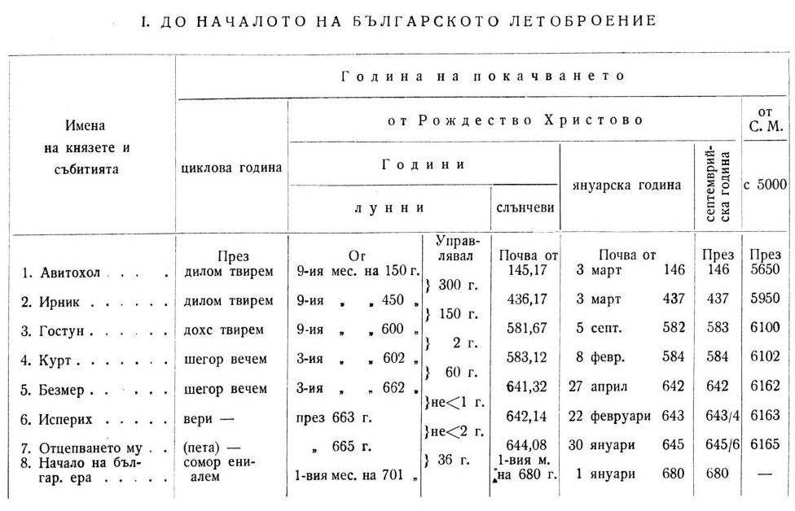

484
II. ОТ НАЧАЛОТО НА БЪЛГАРСКОТО ЛЕТОБРОЕНИЕ
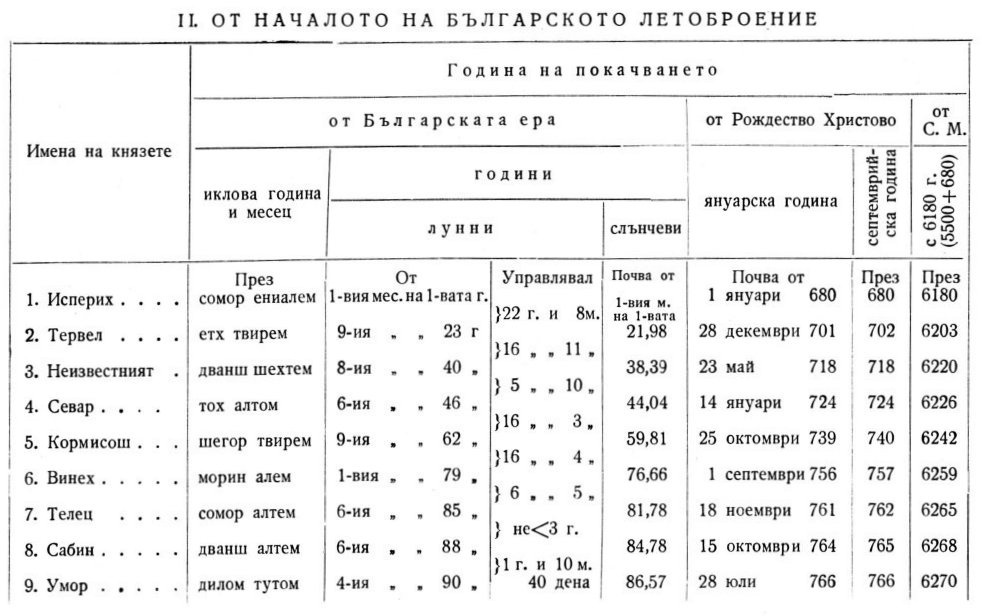

485
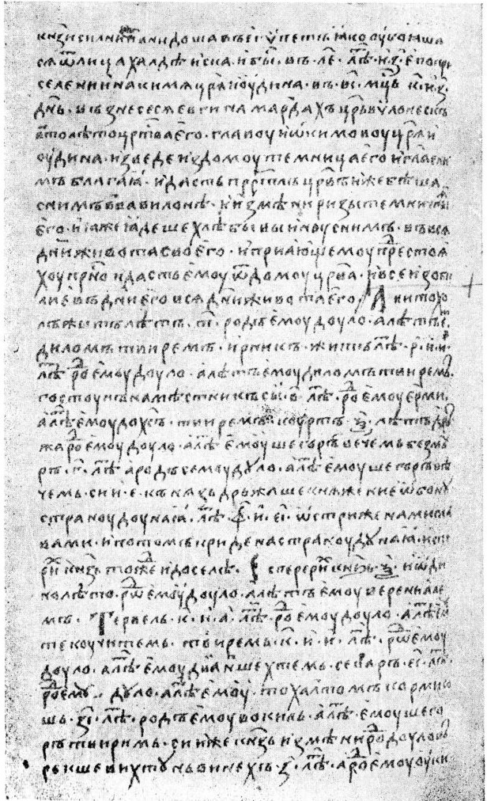
Текст — факсимиле на Именника от ръкописа на Московско-синодалната библиотека, № 280, лист 68а—69.

486
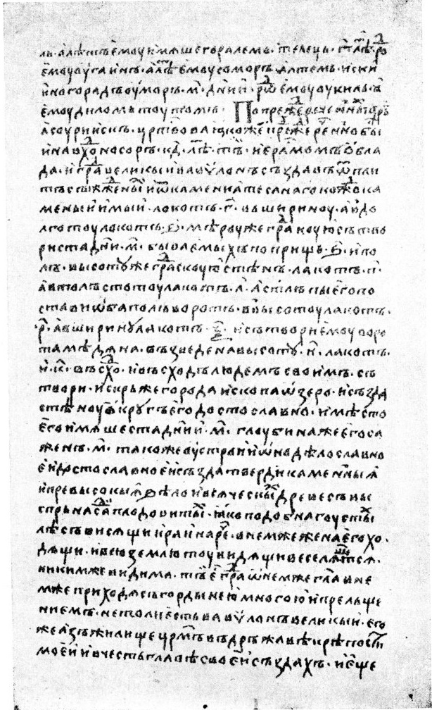

487
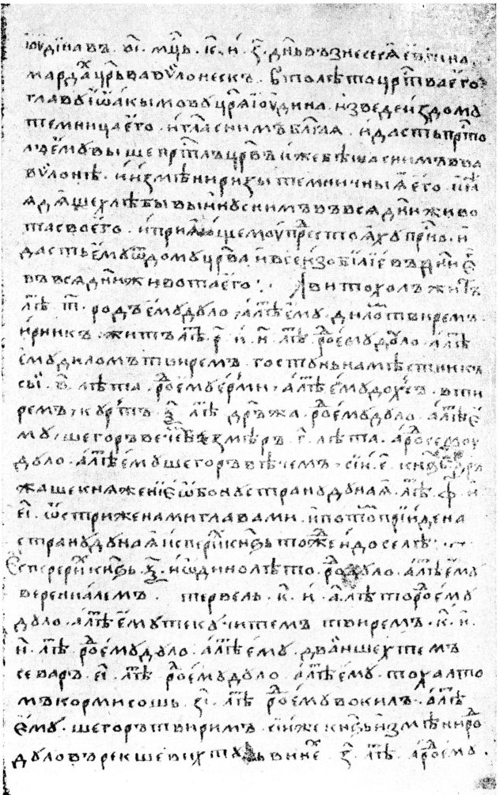
Текст — факсимиле на Именника от ръкописа на Петроградската публична библиотека, Погодиновская сбирка № 1437, лист 72а—73.

488
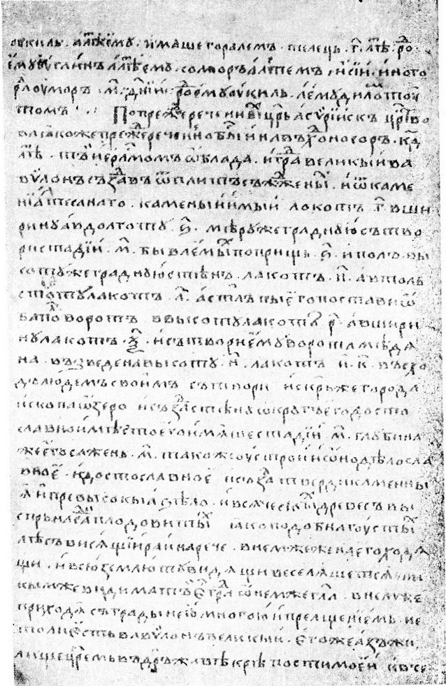